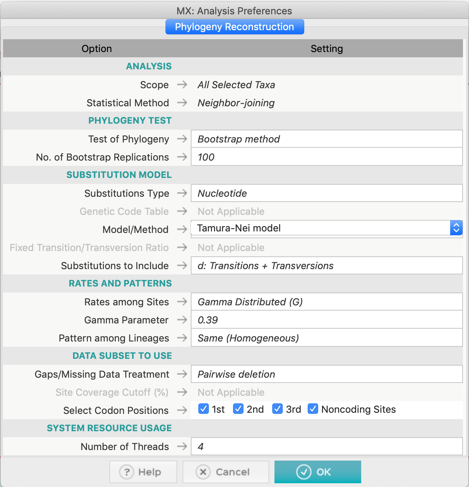
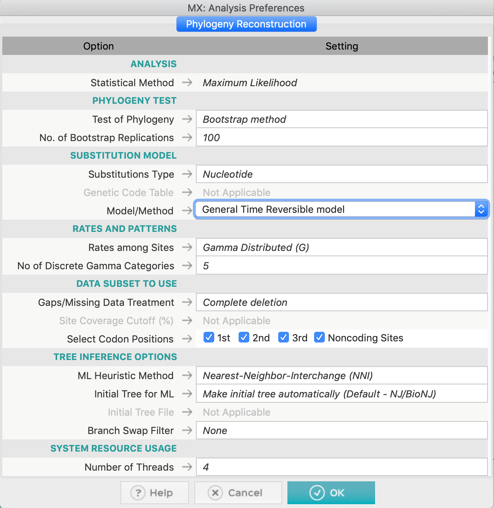

Inferindo Filogenias
A crash course.
Primeiras observações:
- Este tutorial foi construído apenas para fins didáticos. A reprodução dele para qualquer outro fim não é permitida e nem consentida.
- As etapas abaixo demonstram como obter dendrogramas pelos diferentes métodos usando a ferramenta MEGAX. Lembre-se que a obtenção de Árvores Filogenéticas para estimar uma Filogenia é um problema muito complexo, que envolve teste de hipóteses e alterações na amostragem de sequências.
Objetivo
O objetivo deste tutorial é familiarizar o usuário com a interface e as principais funções do programa MEGAX, relacionadas à obtenção de um dendrograma inicial para estimar uma filogenia.
Obtendo o dataset e avaliando suas estatísticas
Nós utilizaremos este dataset para a construção dos dendrogramas. Estas sequências já se encontram alinhadas. Siga os passos abaixo:
-
Abra o alinhamento com o MEGAX. Na janela seguinte, clique em
Analyzee marque a opção protein coding nucleotide sequences and the genetic code. -
Examine as estatísticas de alinhamento. Clique no ícone TA na superior esquerda para abrir o Data Explorer.

Teste do modelo de substituição nucleotídica
Nas suas primeiras versões o programa MEGA não possuía uma rotina para realização de testes do modelo de substituição. Mesmo assim, ele foi um dos primeiros programas a incluir nativamente esta função. O algoritmo é rápido, no entanto ele testa um número maior de modelos dos que estão disponíveis na própria ferramenta.
- Utilizaremos o arquivo de alinhamento múltiplo de sequências vert-aligned.fasta.
- Execute o programa MEGAX (nos computadores do curso o ícone estará na área de trabalho).
- Abra o alinhamento clicando no botão
TAe em seguida em Open a File/Session..., de acordo com a figura abaixo:

- Na janela pop-up seguinte, clique em Analyze (essas sequências já foram alinhadas anteriormente):

- O MEGA lhe fará as seguintes perguntas: se são sequências de nucleotídeos. Clique em Ok.

- Se são sequências codificantes para proteínas. Responda Yes.
- Ao responder, você precisará selecionar o código genético específico. Clique em Vertebrate Mitochondrial:

- Com o arquivo aberto, agora você clicará em
Models,

- E selecione o primeiro item, Find Best DNA/Protein Models (ML)...:

- E responda sim na caixa de diálogo que aparece logo depois, para usar o conjunto de dados que está aberto:
- Após a confirmação, a seguinte caixa irá aparecer:

- Vamos as opções (da forma como apresentadas na figura acima):
- Utilizaremos uma árvore automática de Neighbor-Joining como hipótese inicial para estes dados.
- Como as sequências desse alinhamento são de nucleotídeos, utilizaremos o tipo de substituições adequado.
- Nas opções dos subgrupos de dados, utilizaremos todos os sítios, todas as posições de códons e não utilizaremos filtros para troca de ramos (Branch-swap filter).
- Deixe o número de Threads no padrão que apareceu no computador que você está usando.
- Finalmente, clique em Ok. O processo irá demorar um pouco, dependendo dos recursos computacionais disponíveis. Os resultados aparecerão como a tabela abaixo:

Os resultados são descritos na forma de uma lista do melhor modelo para o menos adequado para os dados utilizados. No MEGA X o critério de informação utilizado é o Bayesiano (BIC). Por ele, podemos verificar que o modelo GTR (General Time-reversible) mais correção gamma (+G) foi o modelo escolhido pelo critério bayesiano, embora não seja o modelo com a menor verossimilhança (lnL). O restante das informações desta tabela serão discutidas presencialmente.
Não esqueça de salvar esta tabela em um dos formatos que o MEGA X disponibiliza, a partir dos ícones presentes no canto superior esquerdo da tela.
O MEGA X também possui a função de calcular o melhor modelo de substituição de aminoácidos. Para isso, basta iniciar as análises com um alinhamento de aminoácidos e na caixa de diálogo escolher a opção correta.
Construindo os dendrogramas
- Construa uma árvore filogenética de Neighbor-joining, com um teste de bootstrap. Use Complete deletion nesse conjunto de dados. Você pode usar o modelo Tamura-Nei 93, já que o modelo GTR não está disponível para o método Neighbor-Joining. Não se esqueça de examinar o parâmetro gamma (+G) para o modelo TN93 e a proporção de sítios invariantes (+I) (se necessário).


- Construa uma árvore filogenética usando Parsimony e também Maximum Likelihood. Para esse último, você pode usar o modelo GTR (General Time-reversible), selecionado pelo teste do modelo de substituição de nucleotídeos. Use também Complete deletion em ambos os métodos.

No método ML, você não precisa ajustar um parâmetro específico de distribuição gamma, basta definir o uso de Gamma
- Não se esqueça de fazer o root das árvores quando necessário e de salvá-las.
A árvore demonstrada abaixo não está enraizada com o grupo externo mais plausível!

Perguntas:
-
Qual espécie você escolheria para ser o grupo externo do conjunto de dados acima? Explique.
-
Compare as árvores obtidas e explique a filogenia, sempre procurando por valores de bootstrap favoráveis (ou não).